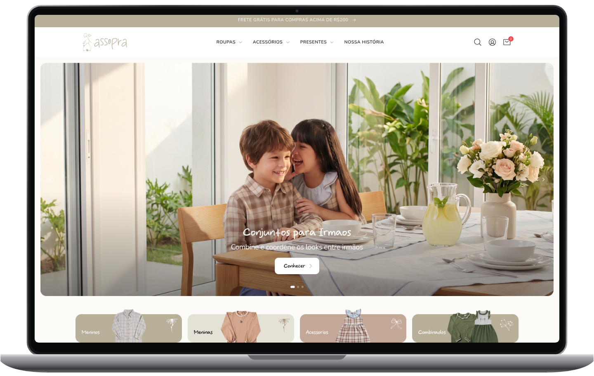
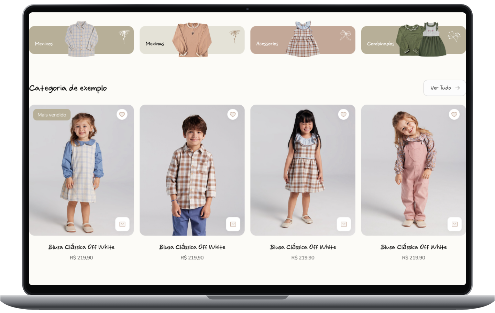
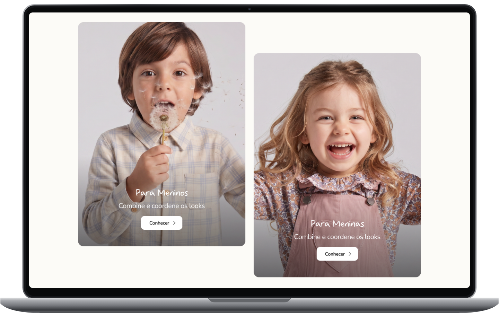
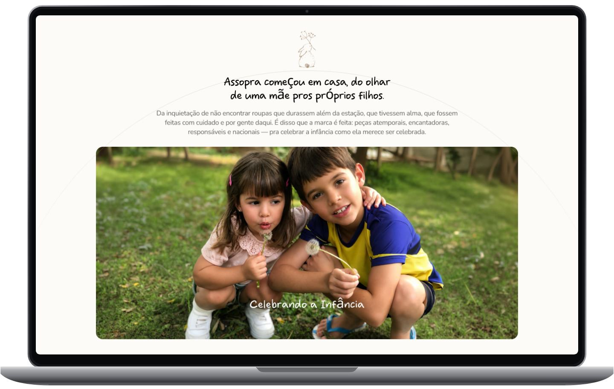
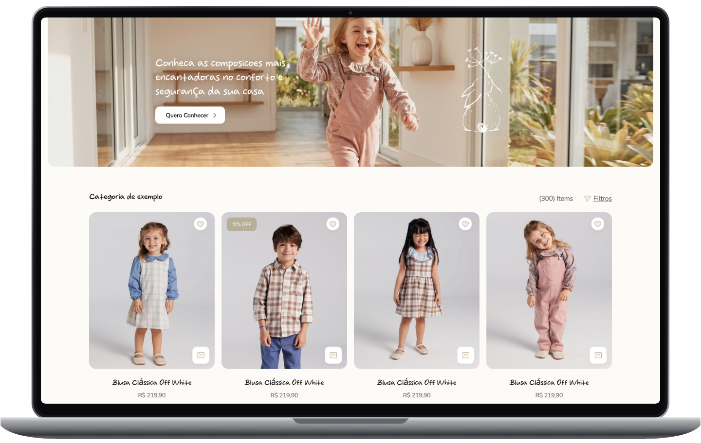
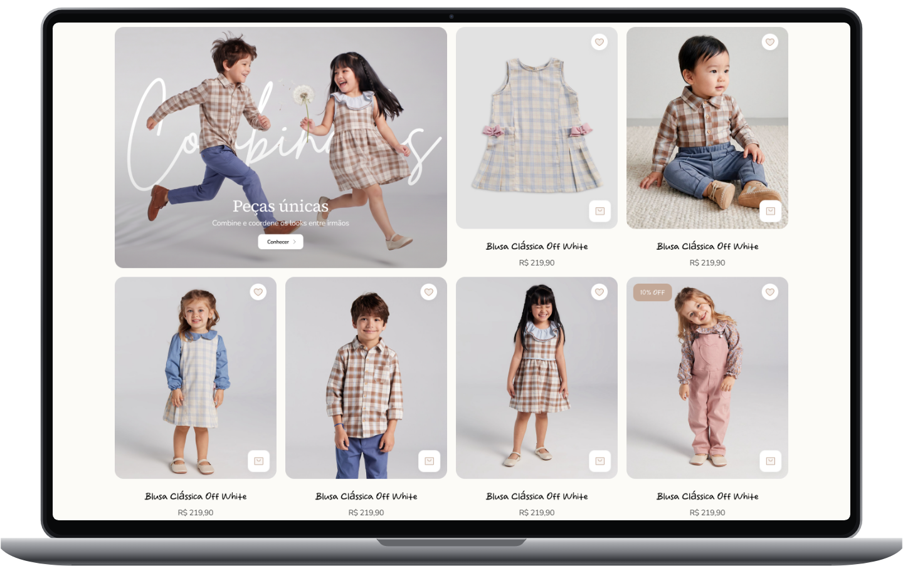
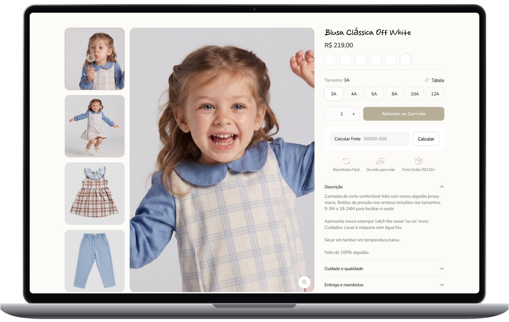
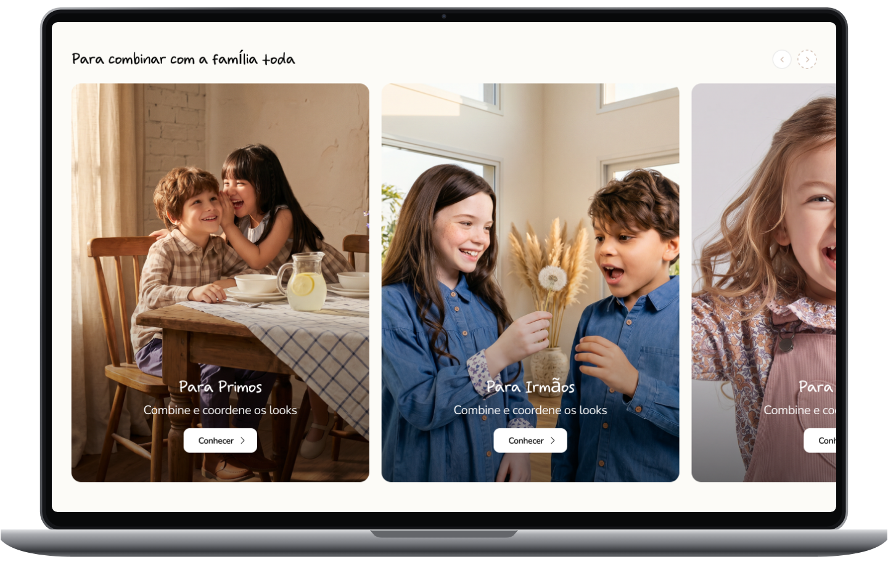
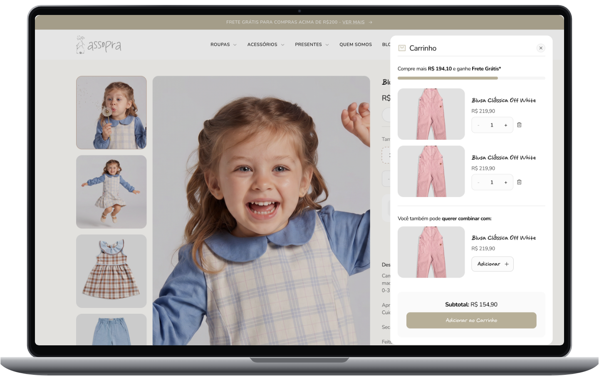

Assopra Store
UX/UI + AI Art Direction · E-commerce
A children's clothing store redesign, from shopping flows to family imagery.
Overview
UX/UI redesign of the Assopra online store, informed by market and persona research. I redesigned every screen across desktop and mobile, from product discovery and catalogue browsing to product details and cart. I also created AI-generated imagery featuring children, families and clothing, giving the storefront a shared visual direction.
The challenge
Rethink an existing children's clothing store, bringing the brand's family-centred character into a shopping experience that makes collections, sizes and coordinated outfits easy to explore.
Design decisions
I paired warm neutral backgrounds and muted olive and blush accents with handwritten headings and rounded sans-serif text. Collection imagery sits alongside product grids, while navigation and filters offer routes through clothing categories, prices and age ranges. Product pages bring size selection, shipping estimates, care information and matching pieces together. Shared components carry the same visual language across desktop and mobile.




















Interface details


Image direction
I used AI as part of a professional image production workflow to create scenes featuring children, families and clothing. The imagery moves between product-focused studio compositions and everyday family settings, keeping the store's visual language consistent across campaign banners and collection cards.